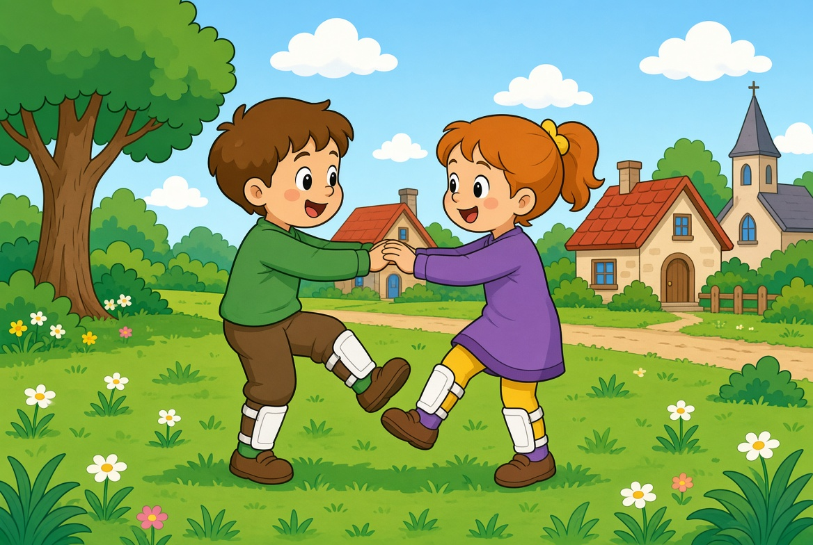

Shin-Kicking
Shin-kicking is an old English game. Two people hold each other and try to kick the other person's shin. They wear soft pads now. The one who stays standing wins.

Shin-kicking is an old English game. Two people hold each other and try to kick the other person's shin. They wear soft pads now. The one who stays standing wins.